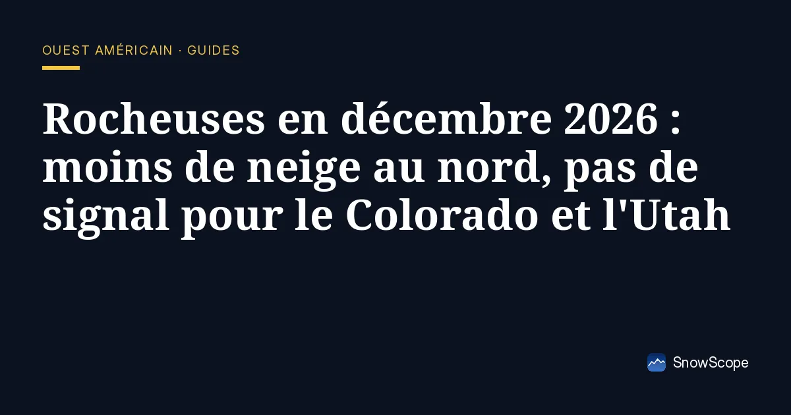

Rocheuses en décembre 2026 : moins de neige au nord, pas de signal pour le Colorado et l'Utah
Le mois de décembre sur les Montagnes Rocheuses devrait être environ 0,9 °C plus chaud que d'habitude, avec des précipitations proches de leur moyenne à long terme. Le tableau varie fortement selon la latitude : les chaînes du nord favorisent une neige de début de saison plus maigre, tandis que le Colorado et l'Utah ne montrent pas de tendance claire.
Consultez les prévisions neige en temps réel pour Rocky Mountains sur l'application SnowScopeHauteurs de neige, alertes poudreuse et carte 3D, gratuitement.

Où le signal se divise
SnowScope compare chaque zone de montagne avec son historique propre des décembres passés. Sur les Rocheuses, quatre zones sur cinq—79 pour cent—ne montrent pas de tendance vers des conditions plus neigeuses ou plus sèches. Un cinquième penche vers plus sec, presque exclusivement dans le nord du plateau du Yellowstone jusqu'aux chaînes près de Jackson et Big Sky. Seuls quelques sommets du sud de l'Utah suggèrent des conditions plus neigeuses, soit 1 pour cent de la région.
Les probabilités de chutes de neige nouvelles supérieures à la moyenne vont de 27 pour cent dans les secteurs les plus secs à 62 pour cent dans les plus humides, avec une valeur moyenne de 45 pour cent sur l'ensemble de la chaîne.
Température et humidité : la raison de la division
Cinquante-et-une prévisions saisonnières du centre météorologique européen s'accordent sur le fait que décembre sera plus chaud que la période de référence (1993–2016). La chaleur n'est pas uniforme : elle atteint son maximum dans les Rocheuses du Nord à 1,7 °C, où 82 pour cent des simulations montrent un réchauffement et seulement 33 pour cent des anomalies humides. Au Colorado, le signal s'affaiblit à 0,3 °C, et en Utah il s'établit à 1,0 °C. Entre-temps, les précipitations se situent à 3 pour cent sous la moyenne décembriste de 40 mm sur toute la chaîne, l'ensemble étant divisé presque à égalité—45 pour cent plus humide, 55 pour cent plus sec.
Ce mélange—une chaleur modérée et des précipitations proches de la normale ou légèrement sèches—laisse le Colorado et l'Utah dans le vague statistique. Les Rocheuses du Nord, en revanche, font face à un contexte plus chaud et légèrement plus sec qui favorise historiquement des manteaux de neige décembristes plus minces.


Colorado : terrain neutre
Les stations de ski du Colorado (Breckenridge, Vail, Winter Park, Beaver Creek, Steamboat, Copper Mountain) reçoivent généralement 51 cm de neige fraîche en décembre. Cette prévision en annonce 46 cm—légèrement en retrait, mais dans la fourchette normale de variation. Seulement 42 pour cent des décembres passés avec des conditions similaires ont été enneigés. Le tableau plus global concerne l'épaisseur : le Colorado a généralement 84 cm au sol le 31 décembre ; la perspective est 80 cm, presque identique.
Les décembres passés les plus semblables à la configuration de cette année ont été 1995, 1985 et 2003. Aucun n'a été ni riche ni pauvre en neige ; c'étaient des mois ordinaires. C'est ce que la prévision suggère maintenant : préparez-vous pour un décembre typique et adaptez-vous si les tempêtes individuelles s'avèrent plus ou moins importantes que la moyenne saisonnière.
Wasatch de l'Utah : sur la bonne voie pour la moyenne
Le terrain plus élevé et plus humide de l'Utah (Park City, Deer Valley, Snowbird, Alta, Solitude) reçoit 71 cm de neige fraîche en décembre normal. La perspective saisonnière suggère à nouveau 70 cm—presque identique. La probabilité de dépasser la moyenne à long terme est de 47 pour cent. Le 31 décembre, le Wasatch a généralement 103 cm au sol, et c'est ce que la prévision prévoit également.
Rien de surprenant à prévoir : l'Utah semble aligné pour un décembre semblable aux quelques dernières décennies. La variable principale sera le moment de l'arrivée des tempêtes et la hauteur de la limite de neige les jours chauds.
Rocheuses du Nord : début sec, puis soyez vigilant
Les stations de ski du Montana et du Wyoming (Big Sky, Jackson Hole, Whitefish, Sun Valley, Bridger Bowl) font face à un ratio de décembre plus sec. La prévision annonce 60 cm de neige fraîche—en retrait des habituels 65 cm—et seulement 37 pour cent de probabilité de dépasser la moyenne décembriste. L'épaisseur le 31 décembre est prévue à 102 cm, correspondant à la moyenne à long terme. La sécheresse provient d'une chaleur supérieure à la moyenne et d'une humidité proche de la normale : il neigera, mais moins de jours seront assez froids pour cela.
Les pentes hautes et bien exposées au nord ont un avantage en début de mois, avant le tassement ou la consolidation par le vent. Au fur et à mesure de la progression du mois, la prévision sur 7 jours compte plus que la tendance mensuelle. Une ou deux grandes tempêtes du Pacifique peuvent inverser le total mensuel, alors consultez la prévision hebdomadaire avant votre départ plutôt que de vous fier à la vue saisonnière.
Conclusion pratique
Les skieurs du Colorado et de l'Utah doivent prévoir un décembre normal et réserver sans hésiter. Les Rocheuses du Nord justifient une petite réserve : privilégiez le terrain élevé dans les premières semaines, et soyez prêt à suivre la dernière trajectoire de tempête plus tard dans le mois. Les trois régions gagneront à consulter la carte SnowScope sept jours avant le départ—elle affiche le moment exact des tempêtes et la limite de neige selon l'altitude, des détails qu'une prévision mensuelle ne peut pas fournir.
Conseils aux skieurs
- Colorado et Utah : traitez cela comme un décembre ordinaire. Aucun signal de la prévision n'argumente pour changer vos plans.
- Rocheuses du Nord : privilégiez les pentes hautes et bien exposées au nord en début décembre tandis que le manteau est le plus frais. Les pentes basses et les versants sud peuvent s'affiner plus vite que d'habitude.
- Consultez la prévision sur 7 jours une semaine avant le voyage. Une seule grande tempête du Pacifique peut redessiner le tableau décembriste et décaler les limites de neige de centaines de mètres.
- Utilisez la carte quotidienne de SnowScope pour repérer précisément la limite de neige à chaque station et chronométrez vos descentes en terrain raide au-dessus.
- Préparez des couches et de la crème solaire : un décembre plus chaud signifie plus de soleil et une fonte plus rapide sur les pentes exposées au sud, surtout l'après-midi.
À propos de ces chiffres
Les hauteurs de neige des stations sont la neige la plus épaisse sur le haut du domaine à la date indiquée ; ce sont des estimations pour une zone, pas une mesure en un point. Les prévisions peuvent changer. Consultez toujours le bulletin d'avalanche officiel avant le hors-piste.
Citer ce bulletin
Pour la recherche, l'enseignement ou la presse : chiffres et graphiques réutilisables librement sous CC BY 4.0 avec cette citation.
SnowScope (2026), Rocheuses en décembre 2026 : moins de neige au nord, pas de signal pour le Colorado et l'Utah, https://snowscope.app/blog/fr/2026/11/rocky-mountains-december-2026-snow-outlook.html, consulté le 2026-11-10
SnowScope (Atlas Labs). (2026, November 10). Rocheuses en décembre 2026 : moins de neige au nord, pas de signal pour le Colorado et l'Utah. SnowScope snow reports. https://snowscope.app/blog/fr/2026/11/rocky-mountains-december-2026-snow-outlook.html
BibTeX
@misc{snowscope2026rockymountainsdecember20,
author = {{SnowScope (Atlas Labs)}},
title = {Rocheuses en décembre 2026 : moins de neige au nord, pas de signal pour le Colorado et l'Utah},
year = {2026},
month = nov,
howpublished = {\url{https://snowscope.app/blog/fr/2026/11/rocky-mountains-december-2026-snow-outlook.html}},
note = {Published 2026-11-10 09:32 UTC; accessed 2026-11-10}
}· CC BY 4.0 · Méthodes, données et outils →
Suivre Rocky Mountains
Gratuit : un message quand la neige arrive, et la météo chaque matin.
Autres bulletins neige

Comment passer un premier jour à Park City Mountain, Utah, et quand y aller : notre historique donne environ 71 in (180 cm) au pic habituel à mi-pente sur 46 hivers passés.

Mt Baker, État de Washington : environ 133 in (337 cm) au pic habituel à mi-pente sur 46 hivers passés, un record mondial de neige, aucun hébergement sur place.

Préparez Mammoth Mountain selon la saison : environ 93 in (235 cm) au pic habituel à mi-pente sur 46 hivers passés, mars le plus enneigé, longs printemps, hivers variables.